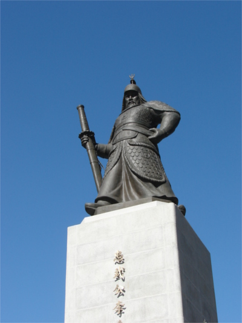
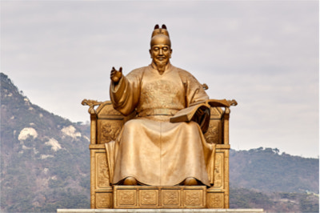

The Korean peninsula around the 1st century BCE was mainly controlled by 3 kingdoms known as the Goguryeo (고구려), Shilla (신라), and Baekje (백제) kingdoms. From this time until 918 there was constant battling for control over the peninsula and parts of manchuria because of its centralized location in between mainland China and Japan. In 918, there was a unification of 3 kingdoms in the south creating a unified Shilla Kingdom known as Goryeo (고려) to then face their northern neighbor the newly organized Balhae (발해) kingdom. Fun fact, the reason we call the peninsula, “Korea” is that western explorers discovered the area during the Goryeo dynasty and thus tried to match the pronunciation by then calling it, you guessed it, Korea! 신기하죠?!
This was the case until 1392 when Goryeo was overthrown and unified under a name that North Korea still goes by to this day, Chosun (조선), and with borders that will have remained the same until the Korean war. Joseon thrived from 1392 to 1897 as they became an industrial leader in Asia at the time developing things such as turtle boats, proliferated the world’s first letter press (not Gutenberg), and of course, Hangul!
Famous historical figures lived during this period such as, Admiral Yi Sun-sin (이순신) who was the most successful naval commander in history having won all 23 of his recorded battles against the Japanese navy despite being outnumbered and outgunned. Also, the Great King Sejong (세종대왕) lived during this period. Seeing his people illiterate and unable to write because memorizing and writing chinese characters was too hard, he decided to develop arguably the simplest, most rational, and well thought out writing system in the world, Hangul! You can find both of these men’s statues displayed prominently in the center of Seoul out front of the Gyeongbok Palace and next to GwanghwaMun station.

